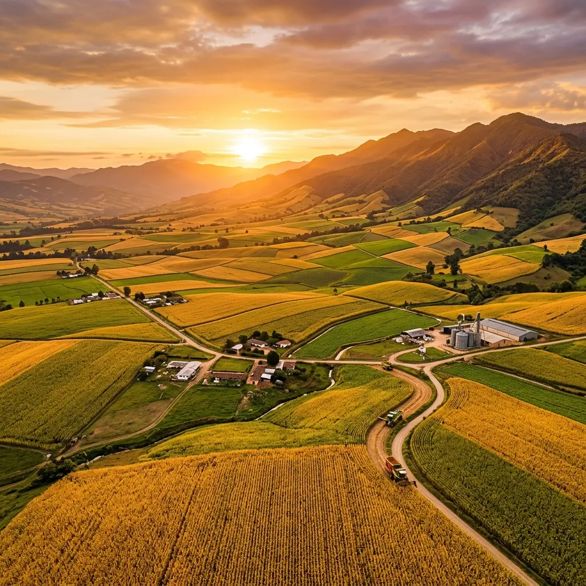

Cada Etapa,
Pensada con Precisión
Siembra y
Preparación del Suelo
Todo comienza con la tierra. En Zenial utilizamos análisis de suelos satelitales y estudios agronómicos para determinar el momento y método óptimo de siembra.
Cultivo y
Manejo Agronómico
Durante los 90-120 días de ciclo vegetativo, nuestros ingenieros agrónomos monitorean cada parcela con tecnología de agricultura de precisión para optimizar el uso de recursos.

🌽Cosecha y
Recepción
La cosecha se realiza cuando el grano alcanza entre 14-18% de humedad, garantizando máxima calidad. Cosechadoras de alta eficiencia reducen las pérdidas post-cosecha al mínimo.
Procesamiento
Industrial
En nuestra planta procesadora con capacidad de 200 ton/día, el maíz pasa por limpieza, clasificación, secado controlado y molienda avanzada bajo normas BPM e INVIMA.

Empaque y
Distribución
El producto terminado se empaca en ambiente controlado y pasa por control de calidad final antes de ser distribuido a clientes en todo el territorio nacional e internacional.